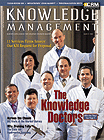

|
 March 2000 Subscribe e-Mail the Editor Sidebar: Winners and Losers |
The Importance of Knowledge CapitalDespite claims to the contrary, ownership of Knowledge Capital is highly concentrated.By Paul A. Strassmann
Much of the rhetoric about the knowledge-based "new economy" is speculation unsupported by economic data. What draws attention are boasts about staggering profits made in the bidding up of Internet stocks. We are living in a time in which established rules of financial viability—such as making profits—should be discarded, according to prophets of the knowledge-based economy. As excesses based on speculation capture the imagination, perhaps the time has come to place some concepts of valuation of assets in a measured perspective. In prior articles ("Knowledge Metrics," October and November 1999 KMM), I illustrated the flight from financial capital to knowledge capital by cases drawn from the pharmaceutical industry. This approach demonstrated how one calculates knowledge-based metrics and how they differ from conventional financial accounting measures. However, these examples could be seen as applying only to conditions in the knowledge-rich pharmaceutical sector and so not relevant as a valid insight about the U.S. economy overall. To paint a much larger picture, I collected 1998 financial data on 7,288 leading U.S. corporations whose stocks are listed publicly. These firms employed 36.2 million people. Their financial assets were $19.8 trillion, equal to 64 percent of all corporate assets in the U.S. This breadth should make for a credible sample. This sum also dwarfs in scope the dot-com firms that are attracting so much media attention; those new firms, in terms of employment and assets, constitute only a tiny fraction of my statistically valid sample of the real U.S. economy. Here are some of the most revealing findings: In sum, much of what is said about the advanced state of the U.S. economy does not stand up to an uncompromising analysis of actual financial results. The claims that the U.S. has reached unprecedented levels of prosperity also are premature. Wealth based on Knowledge Capital remains highly concentrated. It is limited in scope and can be observed only for a small number of firms. Yet the data I have presented in this article should be seen as perhaps the most favorable view on economic conditions. The Knowledge Capital for large segments of the workforce remains unaccounted for, in areas such as government services, defense, not-for-profit firms and notoriously under-resourced consumer services, not to mention the rising population of part-time employees. The good news is that the Knowledge Economy is still evolving from relatively backward circumstances. The present is not at the end of history, as a prominent historian claimed recently. It is merely a start-up venture without a clear understanding of where to go. An ample dose of quantitative humility may be the right medicine for futurists to swallow now, before they plunge ahead with prognostications that lack a balanced view of the realities of economic worth. Paul A. Strassmann originated the trademarked concepts "information productivity," "return-on-management" and "knowledge capital." |